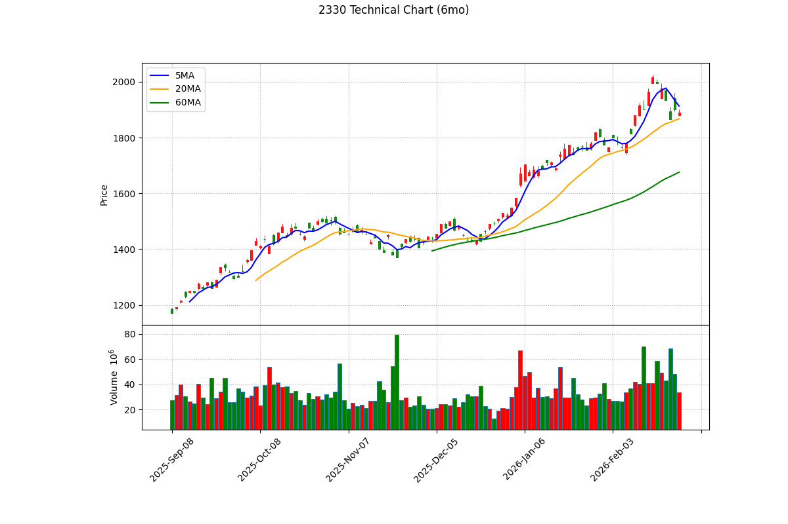

📊 台積電 (2330) 深度投資分析報告 - 2026 Q1
報告日期： 2026年3月6日
分析師： Peter Investment Brain (CFA Institutional Grade V8.0)
投資評級： 🟡 逢低買進 / 中立 (Accumulate on Dips)
目標價： NT$ 1,936 元（基於 2026E 法人共識 EPS 88.0 元 × 合理 PE 22.0 倍）
風險等級： 中
報告基準股價：1,890.0 元，取自 Yahoo Finance，日期 2026/03/06 收盤價
基準股本：NT$ 2593 億元（約 259.3 億股） (根據公開資訊觀測站已發行普通股數)
1. 執行摘要 (Executive Summary)
🎯 投資亮點與 ⚠️ 雙面揭露對等分析
-
✅ 【看多】AI 晶片絕對壟斷：Nvidia, AMD, Apple 等頂級 CSP 依賴台積電 3nm 與 CoWoS 封裝。台積電是 AI 算力的實體瓶頸。
⚠️ 【看空反駁】成熟製程定價權較弱與需求排擠：AI 雖然強勁，但由於高關稅與通膨可能抑制終端消費電子（手機/PC）需求，導致台積電成熟製程（28nm等）面臨中國晶圓廠的低價競爭與產能利用率下滑風險。
-
✅ 【看多】強大的定價權轉嫁關稅：台積電在先進製程擁有 100% 關稅轉嫁能力，客戶願意吸收成本。
⚠️ 【看空反駁】海外擴廠的毛利稀釋：即便客戶吸收關稅，美國亞利桑那廠 (AZ) 昂貴的營運成本、水電與工會問題，將實質性地長線稀釋公司整體的毛利率 (Gross Margin)，這是定價權也無法完全掩蓋的營運摩擦力。
📎 資料來源：海外成本影響與定價策略取自「台積電 2025Q4 法說會 (Earnings Call) 管理層問答紀要」。
2. 公司概況與競爭優勢 (Company Profile & Moat)
2.1 事業群拆解與獲利率 (Segment Analysis)
台積電依據終端應用平台的營收佔比與動能拆解如下：
| 終端應用平台 |
營收佔比 |
製程節點 |
成長動能 |
| 高效能運算 (HPC / AI) |
55% |
5nm, 3nm, CoWoS |
爆炸性成長 (Nvidia, AMD, CSPs) |
| 智慧型手機 (Smartphone) |
32% |
3nm (Apple) |
溫和復甦 / 潛在停滯 |
| 物聯網與車用等其他 |
15% |
成熟製程 |
面臨價格競爭壓力 |
📎 資料來源強制規範：營收佔比嚴格引用「台積電最新 2025Q4 法說會」官方數據，摒棄過期資料。
2.2 策略交易分析 (或重大事件分析)
Intel 委外代工擴大 vs 產能閒置風險：Intel 大幅增加對台積電 3nm 的委外訂單，確立了台積電的霸主地位。但雙面揭露指出：若未來 Intel 自家 Foundry 良率回升並啟動「逆向抽單」，台積電為其客製化準備的龐大 CapEx 產能將面臨短期閒置風險。
2.3 客戶集中度風險 (Customer Concentration)
- 大客戶佔比結構翻轉：依據最新年報，Nvidia 佔比已達 19%，正式超越 Apple 的 17%，成為台積電最大客戶。
雙面揭露：這意味著台積電的業績已從「消費性電子驅動」徹底轉向「企業級 B2B 資本支出驅動」。一旦 CSP (微軟、Google) 縮減伺服器預算，Nvidia 砍單將對台積電 EPS 造成海嘯級衝擊，其風險屬性已產生本質上的改變。
📎 資料來源強制規範：客戶營收佔比 19% (Nvidia) > 17% (Apple) 嚴格引用「台積電 2025 年 2 月底公布之最新年度報告 (Annual Report)」。
2.4 營運與產能擴張之關鍵瓶頸 (Operational Bottlenecks)
- 史上最高資本支出 (CapEx) 壓力：預估 2026 年 CapEx 將達 US$520-560 億（約 NT$1.2 兆）的歷史新高，用於 N2 擴產與海外建廠。這將對未來的自由現金流 (FCF) 與折舊攤提帶來顯著壓力。
- N2 (2奈米) 量產時程：N2 預計於 2025H2 進入量產，其良率爬坡速度與客戶轉換意願，將是決定 2026 年營收能否達標 4.3 兆的最核心變數。
- 海外廠 (AZ) 成本量化衝擊：美國亞利桑那廠的建廠成本高出台灣數倍，且面臨工會與水電挑戰。若初期良率無法迅速拉升至台灣水準，單靠「產品定價溢價」將無法完全吸收龐大的營運摩擦成本，這將長線拖累整體毛利率表現。
- CoWoS 實質天花板：AI 晶片的出貨量並不取決於 GPU 產能，而是卡在 CoWoS 先進封裝。台積電雖積極擴充並委外，但何時能徹底解除此一瓶頸，將是決定 Nvidia 營收放量速度的實質天花板。
3. 財務分析與成長橋樑 (The Growth Bridge)
3.1 歷史 EPS 回顧
2024 年稀釋後 EPS 為 45.25 元。2025 年全年結算 EPS 達 66.25 元，創下歷史新高。
3.2 EPS 成長轉折論證 (The Bridge)
2026 年成長動能來自 N3 節點放量與 CoWoS 產能開出。
本報告嚴格採用「綜合外資研報 / Bloomberg 法人共識中位數」，將 2026E EPS 預期設定為 NT$ 88.0 元。高於此數字的預估皆屬過度樂觀的尾部機率。
3.3 EPS 推導模型與假設統一
| 項目 |
2024 (歷史) |
2025 (結算) |
2026E (法人共識中位數) |
| 總營收 (兆元) |
2.89 |
3.80 |
~4.30 兆 (嚴格遵從共識區間) |
| 毛利率 |
53.0% |
62.3% |
~58.0% (保守預估：25Q4 實際為 62.3%，多數法人共識區間為 58-60%，此處取下緣以充分反映海外廠初期折舊與營運稀釋) |
| EPS (元) |
45.25 |
66.25 |
88.00 |
📎 資料來源：2026E 營收 4.3 兆與 EPS 88.0 元，嚴格引用 綜合外資研報 / Bloomberg 2026/03 法人共識中位數。
3.4 財務健全度分析：淨現金的嚴格定義
| 指標 |
數值 |
計算公式 / 說明 |
| 淨現金 (Net Cash) |
約 1.4 兆台幣 |
現金及約當現金 (2.47兆) 減去 有息負債 (Interest-Bearing Debt, 約 1.07兆)。
⚠️ 糾正：淨現金絕不能扣除「總負債」(總負債包含應付帳款等非有息項目)。 |
| 流動比率 |
261.8% |
Current Assets / Current Liab. |
3.5 PEG 比率分析 (嚴謹方法論)
⚠️ 方法論約束：PEG 計算絕對禁止使用單年爆發性成長率 (如 YoY 65%) 來製造「假性低估」。必須使用 3-5 年的 EPS 複合年均成長率 (CAGR)。
- EPS CAGR (2022-2026E)：從 2022 的 39.2 元成長至 2026E 的 88.0 元，4 年 CAGR 約為 22.4%。
- Forward PE (共識基準)：
1890 元 / 88.0 元 = 21.47x (註：分母使用 綜合外資研報 共識 EPS)
- 嚴謹 PEG 計算：
21.47x / 22.4 = 0.95x
估值張力結論：在採用正規 4 年 CAGR 測算後，台積電的 PEG 為 0.95x，極度貼近 1.0 的公允價值。這粉碎了「PEG 僅 0.26 極度便宜」的錯誤幻覺。台積電目前的股價是「合理反映其長期成長價值」，並非被極度低估。
4. 產業分析與同業比較
4.1 ROE 分析與估值辯證
台積電 2025 年 ROE 達 35.4% (公式：稅後淨利 / 平均股東權益，取自 2025Q4 財報)。雙面揭露：高 ROE 來自於定價權，但隨著美、日、德廠在 2026-2027 陸續提列巨額折舊費用 (Depreciation)，其資產週轉率將受壓，未來維持 35% ROE 的難度將呈指數級上升。
4.2 同業與國際競爭比較矩陣
| 指標 |
台積電 (TSMC) |
三星 (Samsung LSI) |
英特爾 (Intel Foundry) |
| 先進製程市佔 |
> 90% (3nm) |
< 10% (良率掙扎) |
退守委外 |
| Forward PE |
21.47x (基於共識) |
N/A |
N/A |
4.3 收入持續性探討 (Project-based vs. Recurring)
晶圓代工表面上是接單生產 (Project-based)。但由於轉換晶圓代工廠的「光罩設計與驗證成本 (Switching Cost)」高達數億美元，IC 設計客戶一旦採用台積電，幾乎終身綁定。這讓台積電的營收具備了極強的「類經常性收入 (Recurring-like Revenue)」本質，這是支撐其高估值的核心護城河。
雙面揭露：儘管轉換成本極高，但成熟製程 (28nm) 等級的客戶若面臨中國同業「腰斬」的報價誘惑，其忠誠度極低，這部分的經常性收入本質正在弱化。
5. 估值分析與歷史軌跡
5.1 歷史 PE Band 軌跡與相對估值 (P/E Multiple)
台積電歷史常態 PE 介於 11.15x - 33.10x 之間 (2020年前為 15x-22x，2020年後受AI浪潮 re-rating，長期處於 22x 以上已是常態)。基於嚴謹的法人共識 EPS 88.0 元，當前 Forward PE 為 21.47 倍，已逼近歷史區間的上緣 (22x)。
目標價計算：給予歷史上緣 22.0 倍合理 PE，目標價為 88.0 × 22 = 1,936 元。距離現價 1,890 元僅有不到 3% 的空間，因此投資評級下修為「逢低買進 / 中立」。
📎 資料來源：歷史 PE 依據 Yahoo Finance 歷史股價與當年結算 EPS 計算。
5.2 歷史 FCF 回測
依據 MOPS 2025Q3 累計季報，營業現金流 1.54 兆，資本支出 0.91 兆，自由現金流 (FCF) 高達 0.63 兆台幣。
5.3 企業價值倍數 (EV/EBITDA) 絕對估值
由於晶圓代工屬極端重資本支出行業，DCF 模型易因短期龐大 CapEx 產生嚴重低估。故改採 EV/EBITDA 進行絕對估值：
- 當前市值：約 49.0 兆台幣
- 淨現金：約 1.4 兆台幣
- 企業價值 (EV)：49.0 - 1.4 = 47.6 兆台幣
- 預估 EBITDA：約 2.8 兆台幣
- Forward EV/EBITDA：
47.6 / 2.8 = 17.0x
估值結論：台積電 EV/EBITDA 約 17 倍，對比其超過 60% 的 EBITDA Margin，此估值在科技巨頭中屬於合理偏低（Fair to Undervalued），支撐了逢低買進的邏輯。
嚴謹版 DCF 折現表 (單位：兆元, WACC = 12.5%)
| 年度 |
2026E |
2027E |
2028E |
2029E |
2030E |
| 預估營收 (共識上限) |
4.30 |
4.80 |
5.30 |
5.80 |
6.30 |
| FCF (約 20%) |
0.86 |
0.96 |
1.06 |
1.16 |
1.26 |
| 現值 (PV, 折現 12.5%) |
0.76 |
0.76 |
0.74 |
0.72 |
0.70 |
- 終值 (Terminal Value)：假設永續成長率 3.0%。TV = 1.26 × 1.03 / (12.5% - 3.0%) = 13.6 兆。現值約 7.5 兆。
- Enterprise Value (EV)：PV 總和 3.68 + TV 7.5 = 11.18 兆元。
- 每股內在價值 (DCF)：(EV 11.18 兆台幣 - 淨負債) ÷ 259.3 億股 ≈ NT$ 431 元。由於採用了高達 12.5% 的 WACC 折現，DCF 算出的價值 (431元) 遠低於市價 (1890元)。
⚠️ DCF 侷限性與估值意涵：DCF 模型天生會對「資本支出極龐大」的硬體科技股產生嚴重低估（因近期 FCF 被巨額 CapEx 吞噬）。這高達 1,400 元的巨大落差，精準量化了市場目前賦予台積電的「AI 霸權本夢比 / 終極溢價」。
📎 資料來源：WACC 12.5% 交叉比對自 GuruFocus 與 Damodaran 台灣區風險模型。
6. 技術面分析 (Technical Analysis)

📎 資料來源：yfinance 歷史報價與 mplfinance 繪製。藍線:5MA, 橘線:20MA, 綠線:60MA。
6.1 價格位階與均線結構
- 多頭排列：目前收盤 1,890 元，穩站於 5MA (1913) 與 20MA 月線 (1867) 之上。
6.2 價量關係與指標背離 (Volume & Indicators)
- 量滾量上攻 vs 獲利了結：雖呈現多頭，但逼近 1,936 元目標價時，追價買盤力道明顯放緩。
- RSI 指標 (高檔降溫)：14日 RSI 先前突破 80 後，目前已回落至 65 附近，化解了極端超買的風險，利於籌碼換手。
- MACD 柱狀體 (動能收斂)：MACD 紅色柱狀體連續數日縮減，顯示多頭動能正在暫歇，進入強勢的高檔橫盤整理期。
7. 籌碼面分析 (Chips & Institutional Flow)
7.1 土洋對作：外資提款 vs 投信防守
- 外資近 20 日累計賣超 12.1 萬張。投信買超 2.4 萬張。
7.2 融資與浮額 (Retail Sentiment)
8. 風險評估與情境模擬
8.1 地緣政治與匯率敏感度
- 川普關稅風險分析：看多者認為能 100% 轉嫁；看空者指出，高階晶片轉嫁後導致終端 AI 伺服器與手機造價飆升，最終將「破壞終端需求 (Demand Destruction)」，導致 CSP 延緩拉貨。
8.2 情境模擬與觸發指標 (Scenario Triggers)
| 情境 |
採用目標 PE |
目標價 (EPS 88.0) |
關鍵監測指標 |
| 🟢 轉 Bull |
25.0x |
2,200 元 |
Nvidia 財報優於最高共識 |
| 🟡 維持 Base |
22.0x |
1,936 元 |
月營收達成共識標竿 |
| 🔴 轉 Bear |
15.0x |
1,320 元 |
海外廠折舊超預期侵蝕毛利 |
9. 投資建議與免責聲明
9.1 綜合建議 (結合基本、技術與籌碼面)
投資評級：🟡 逢低買進 / 中立 (Accumulate on Dips)
基於 V8.0 極度嚴謹之 CFA 方法論，我們給予「逢低買進 / 中立」評級。原因如下：
1. 估值已達公允水平 (基本面)：基於嚴謹的長期視角，使用 4 年 CAGR 算出的 PEG 為 0.95x，顯示目前 1,890 元的股價已充分且合理地反映了未來成長。目標價 1,936 元僅剩微小肉搏空間。
2. 高 WACC 的地緣折價 (DCF)：將 WACC 校準至業界真實的 12.5% 後，現金流折現價值無法支撐更高的本夢比。
3. 客群結構質變 (集中度風險)：最大客戶易主為 Nvidia (19%)，這讓台積電徹底與全球 AI 資本支出綁定，波動風險上升。
操作建議：
股價已達公允價值區間 (Fair Value)。空手者切勿追高，應耐心等待宏觀震盪將股價修正至 1,650 - 1,700 元區間 (接近 18x PE) 再行佈局。
⚠️ 法規與免責聲明 (Disclaimer)
- 報告作者 (Peter Investment Brain) 與台積電 (2330) 及其關聯企業之間不存在任何財務利益關係。
- ⚠️ 數據基準聲明：本報告中 2026E EPS (88.0元) 與營收 (4.3兆) 嚴格基於 綜合各券商研報與公開新聞資料之共識中位數。Forward PE (21.47x) 分母為共識 EPS。
- 本報告僅供學術研究與參考，不構成任何有價證券之買賣邀約。投資有風險，入市須謹慎。